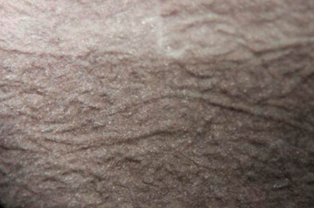
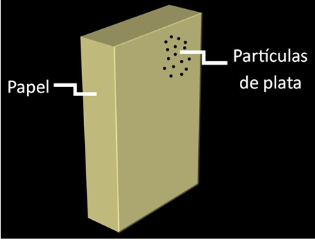
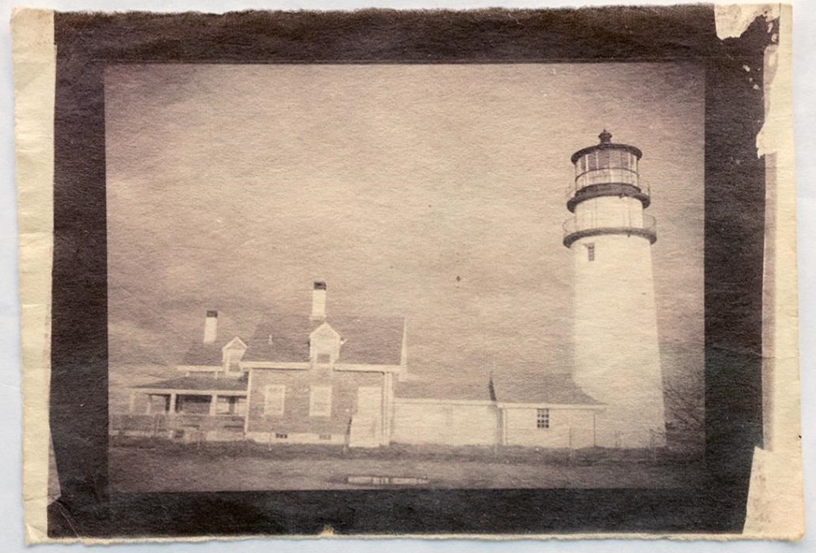

Papel Salado
(1840-1860)
- superficie mate
- tonos cálidos: cafés, rojizos y violetas
- fibras del papel claramente visibles



Desvanecimiento y amarillamiento. Es el resultado del cambio de la morfología de las partículas de plata, ya sea por un ambiente oxidante o por la formación de sulfato de plata (resultado de un fijador agotado, lavado insuficiente o contaminantes atmosféricos).
El papel salado suele ser la impresión en plata más vulnerable a dicho deterioro, debido a las pequeñas partículas de plata que conforman la imagen.
- almacenar en guardas de papel o plásticos de buena calidad, sin texturas rugosas y químicamente estables;
- evitar la alta humedad relativa y las fluctuaciones constantes de temperatura;
- el lugar de almacenamiento debe tener más de 30% y menos de 60% de humedad relativa;
- temperatura de 18°C o inferior;
- evitar la exposición la luz;
- evitar contaminantes ambientales.
Difícilmente se encontrará algún ejemplar de la época en colecciones de México, por tratarse de un proceso muy temprano.
Descripción
Creado por William Henry Fox Talbot
Impresión positiva cuyo soporte es un papel de fibra sensibilizado con sales de plata. Se logra colocando el negativo en contacto con el papel sensibilizado, y exponiéndolo a la luz del sol (luz UV). Después de unos minutos, la imagen aparece; en seguida se debe pasar por un fijado con tiosulfato de sodio para eliminar los residuos de material fotosensible no expuesto. También se puede someter a un proceso de entonado para estabilizar la imagen.
Como citar esta colaboración:
Apellido, nombre (año), “Título del artículo”, en Archivo Churubusco, año 1, número 2, disponible en -dirección en internet-, consultado -día, mes, año-.